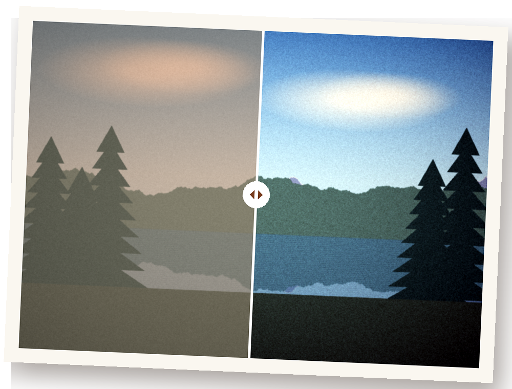

Heirloom
Photo album scanner for iPhone
Heirloom turns the prints in your albums and shoeboxes into digital photos, on your iPhone. Scan a whole album page and every photo is found, cropped and straightened. Glare from glossy prints is removed with a second angle, faded colors come back, and the date written on the back goes into Photos — so a 1978 print shows up in 1978.

How to scan
- Tap Scan Photos. Choose Album page for several prints or Single photo for one.
- Lay the prints on a dark surface (or open the album flat) in soft, even light, and take the photo.
- Check the frames: drag a corner to adjust, or use the … menu to add or remove a frame.
- If Heirloom spots glare, tap Fix and photograph the same page again from a little to the side.
- For each photo, rotate if needed, add the date (or tap Read the back) and a caption, then Save.
Guides
- How to scan old photos with your iPhoneHow to set up light, background and angle, scan whole album pages, restore faded color and keep the writing on the back.
- How to remove glare when scanning photosWhy glossy prints and album sleeves reflect, how to avoid most glare, and how a second angle removes the rest.
- How to change the date on scanned photosWhy scanned prints show today's date, how to change it in Photos, and how to work out the date of an undated print.
Questions
Where do my scans go?
Into Heirloom's library on your iPhone, grouped by decade, and — unless you turn it off in Settings — into the Photos app, dated when they were taken. The date and caption are also written into the file (EXIF and IPTC), so Google Photos, Lightroom and other apps sort them correctly too.
Which dates can it read?
Handwritten and printed dates such as "June 1978", "Summer '82", "Xmas 1969", "12/25/65", camera imprints like "'98 6 12", decades like "the 70s", and month names in English, Spanish, Portuguese, German, French and Italian, plus Chinese, Japanese (including era years) and Korean dates. You can always pick the date yourself — a decade, year, season, month or exact day.
Can I try it without prints?
Yes. On the scan screen, tap Example to scan the included example album page, its second angle and the back of a print.
I bought Pro on another device
Open Settings in Heirloom and tap Restore Purchase, signed in with the same Apple Account (or a Family Sharing member's).
Does Heirloom upload my photos?
No. Everything — finding prints, glare removal, color restore and reading the back — runs on your iPhone. There's no account. See the privacy policy.
Can it scan negatives or slides?
Not yet. Heirloom is made for printed photos and album pages.
Contact
Questions or ideas? Email levan.topchishvili@gmail.com.